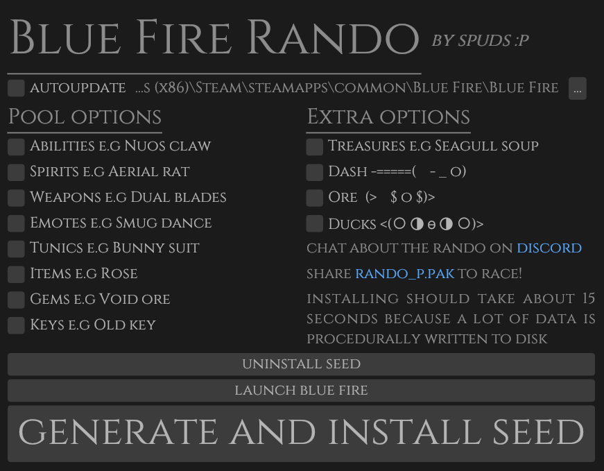

the blue fire rando is a game mode for blue fire that enhances replayability by shuffling pickups randomly while ensuring the game is still beatable without glitches
the idea for the blue fire rando came from the hollow knight randomiser which i thought was really cool so i thought even though blue fire is not a fully fledged metroidvania it would add more replayability for one of my favourite games
oh boy...where do i start? this program's brought me a lot of joy and a lot of anguish.
anyway it all started with a single conversation with my chill yet sometimes aggravating fried Luukie13. the idea was simple to understand but difficult to implement. a program that shuffles the locations of items, spirits, emotes, weapons and tunics. of course if this was unity this would be simple however blue fire was made in unreal. at first i approached the idea of changing enums and datatables - that didn't get me anywhere as it could only mix within types. i encountered the same problem plus default values not appearing when experimenting with references in maps and pretty much gave up
however then i start working on the unreal map editor and discovered a phenomenom that delighted me - i could change default property values by just adding them to the actor. this meant so much as it knocked out 2 birds with one stone - it meant that chests could mix and that chests with sapphire ore could be changed.
although this presented another issue - a fourth rewrite. however this time i wanted to do it right. i wanted a proper logic system - something that had been a major pain point so far. a few months and no progress has been made - i want to change that so i got this notebook to plan it out
spuds out (dunno why i wrote that but that's the only time i'll do that)
 back
back